Use of the software as Graphical Interface Application
This is the default use of the software, which can be launched from the Start Menu and it opens automatically the graphical interface to enter the options and process the Word / PDF files. This article is divided in two sections oriented to the two types of input documents to insert the image:
Inserting image in MS Word files
For both, Word and PDF files there are two options to use the software: with individual files or with a folder which contain the files to be processed.
For individual files:
Select Word Document as document input type.
Select Files as Type.
Click on Explore in Files/folder Path row to select a valid MS Word file or list of files.
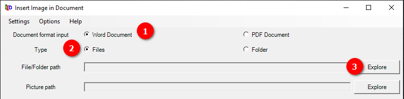
It opens the file explorer where you should localize the document and open it (you can also select various documents and insert the image in all of them).
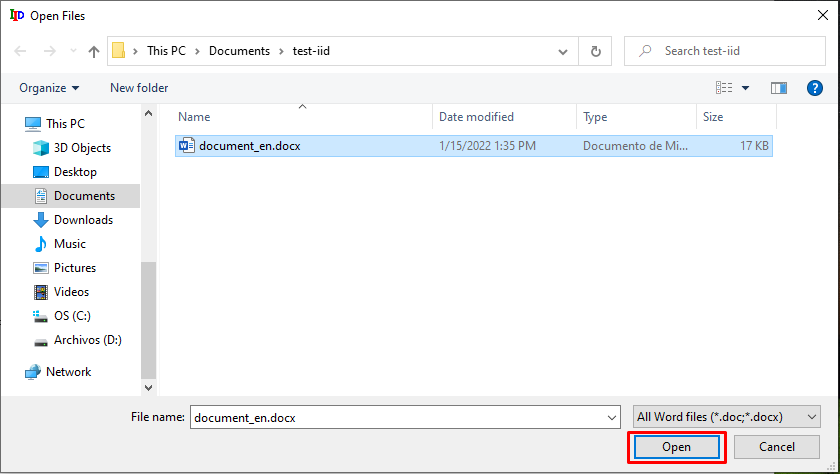
Click on Explore in Picture Path row to select a valid image file to insert in the documents selected before.
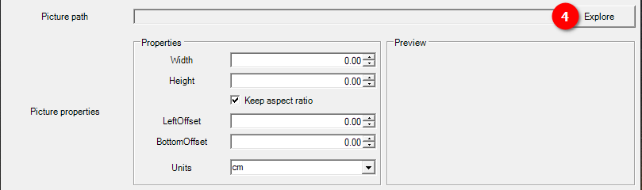
It also opens the file explorer to select the desired picture:
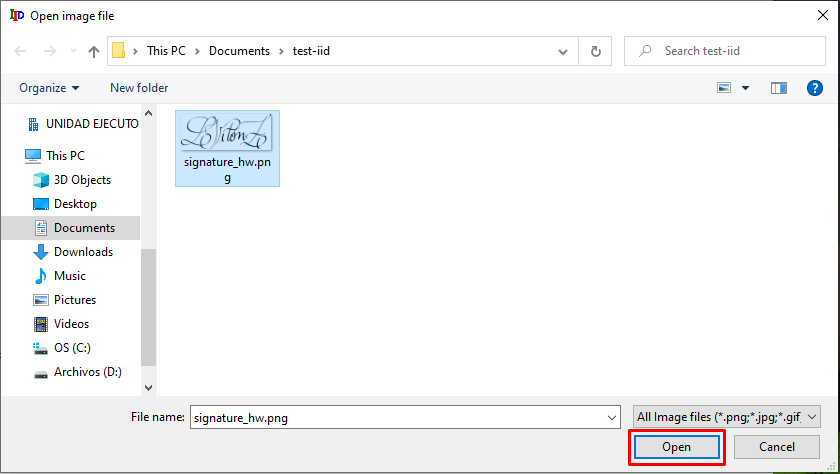
When the file is selected via the file explorer, an image preview is shown in the Preview Box. It also loads the dimensions measured in the selected unit, shown in the Units row.
You can modify the size of the image to insert and if Keep aspect ratio is checked, the other dimension is modified accordingly. You can also modify the offset from left (LeftOffset) and bottom (BottomOffset). You can also enter negative numbers to get an offset to the left and to the bottom.
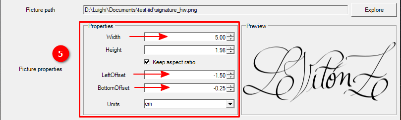
Once all the dimensions are set, you can enter the placeholder, which is a portion of text in the document which works as a reference.
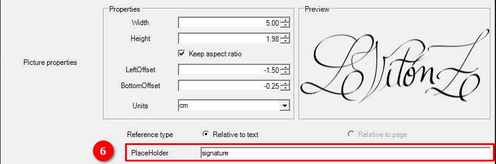
Keep in mind that the LeftOffset and BottomOffset are relative to the position of the top left corner of the text in the document. For more detailed information about the position calculation of the image, please refer to Image position relative to text.
In save options, you could select if you one to save the PDF in the same folder where it is the MS Word document or a subfolder and enter the name. If the folder doesn't exist, the software will create it for you.
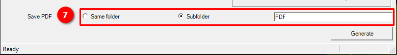
Finally, you can click on Generate to process the documents and insert the image with the entered dimensions in the reference entered.
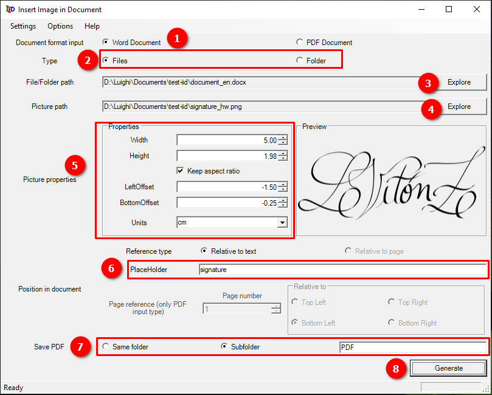
When the process starts it opens a new dialog which shows in a progress bar the advance of the processing and prints informative messages about the current state of the processing flow.
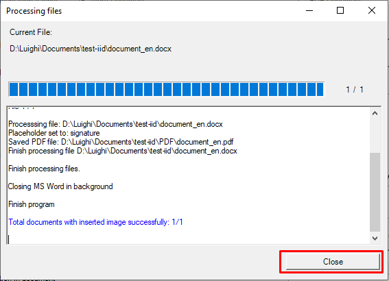
Then, you can check the result opening the PDF. Don't forget to close the PDF, if you want to regenerate it, otherwise an error will occur as the software cannot write the file if it is open.
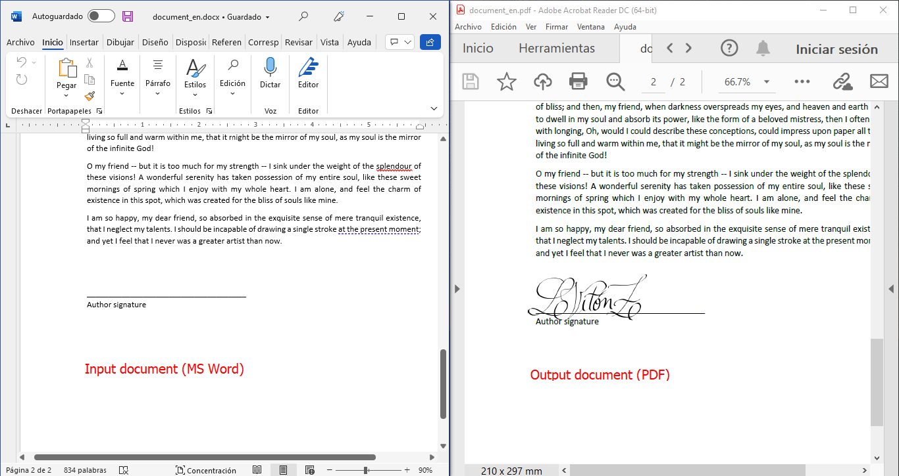
For a folder containing Word files:
It is pretty similar to the previous workflow changing in the second one:
Select Word Document as document input type.
Select Folder as Type.
Click on Explore in Files/folder Path row to select the folder containing the Word files.
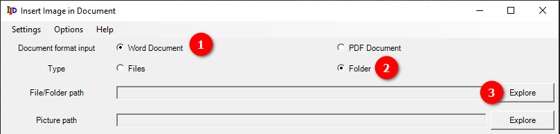
It opens the folder explorer where you should localize the folder that contains the Word files.
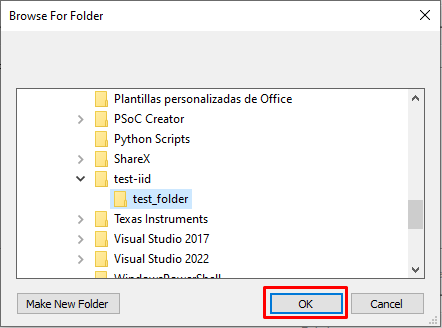
From here, it continues with the 4 to the 8 steps of individual files. When clicking in the Generate button it opens the progress dialog box which shows the status of processing for all of the Word documents inside the selected folder.
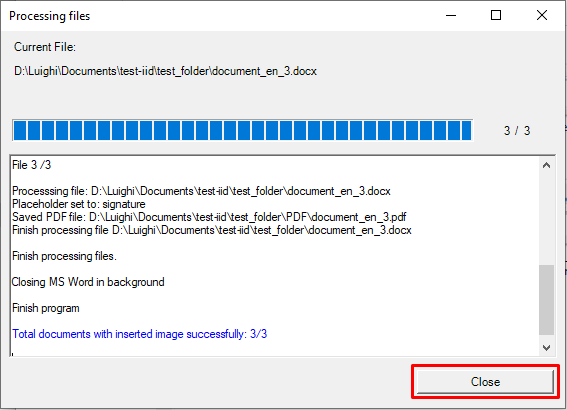
When opening the folder you can check the generated files (each one per Word document found in selected folder).
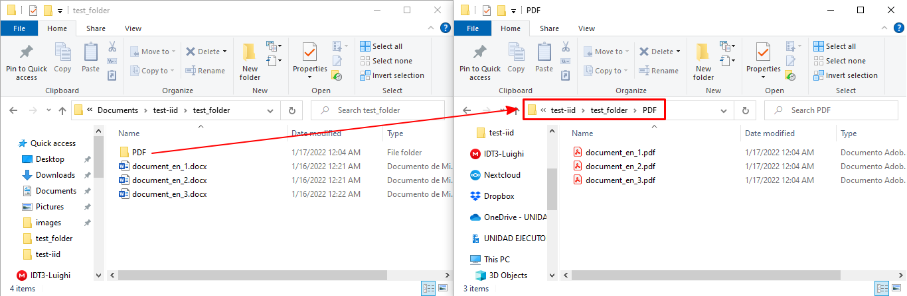
Inserting image in PDF files
Different from the Word files case, for PDF there are two options of reference: relative to text and relative to page, while Word only have relative to text.
With reference relative to text
In this case, it is pretty similar as the Word case, only changin for both individual files and folder cases, the Document input type.
For individual files:
Select PDF Document as document input type.
Select Files as Type.
Click on Explore in Files/folder Path row to select a valid PDF file or list of files.
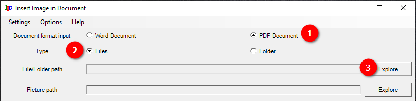
It opens the file explorer where you should localize the document and open it (you can also select various documents and insert the image in all of them).
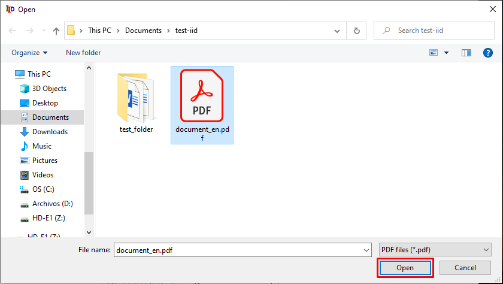
Continue from 4 to 8 as the Word case for individual files. Make sure that Relative to text option is selected in the Reference type row.
After the program has completed that task sucessfully, you can check the result PDF in the created subfolder (with name PDF, if not changed in the options) under the directory of the original file .
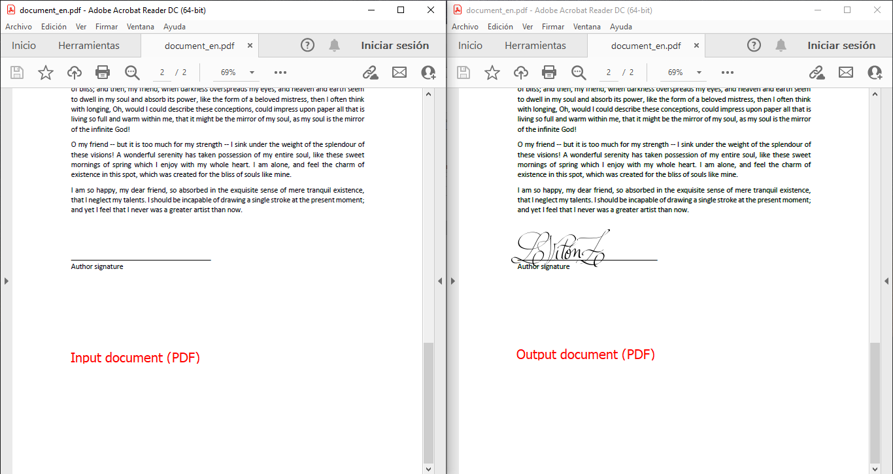
For a folder containing PDF files:
Select PDF Document as document input type.
Select Folder as Type.
Click on Explore in File/folder Path row to select the folder containing the PDF files.
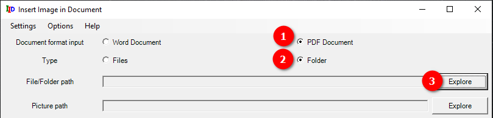
It opens the folder explorer where you should localize the folder that contains the PDF files.
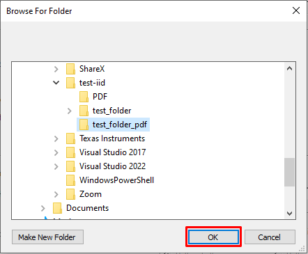
From here, it continues with the 4 to the 8 steps of individual files. When clicking in the Generate button it opens the progress dialog box which shows the status of processing for all of the PDF documents inside the selected folder.
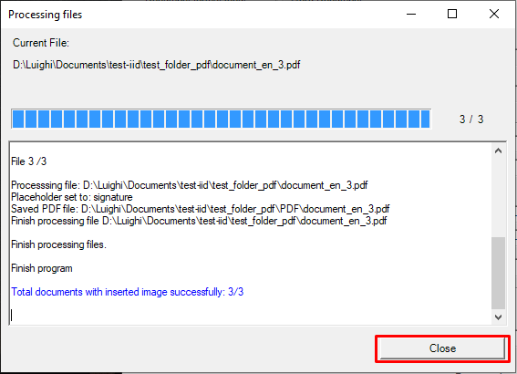
When opening the folder you can check the generated files (each one per input pdf document found in selected folder).
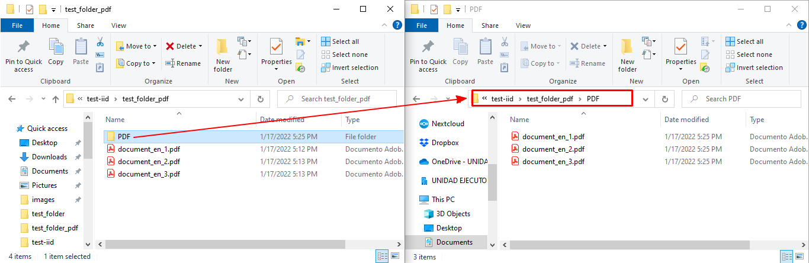
With reference relative to page
In this case it vary, as incorporates its own options to refer the image position relative to the page.
For individual files:
Select PDF Document as document input type.
Select Files as Type.
Click on Explore in Files/folder Path row to select a valid PDF file or list of files.
Click on Explore in Picture Path row to select a valid image file to insert in the documents selected before. When the file is selected via the file explorer, an image preview is shown in the Preview Box. It also loads the dimensions measured in the selected unit, shown in the Units row.
You can modify the size of the image to insert and if Keep aspect ratio is checked, the other dimension is modified accordingly. You can also modify the offset from left (LeftOffset) and bottom (BottomOffset). You can also enter negative numbers to get an offset to the right and to the bottom.
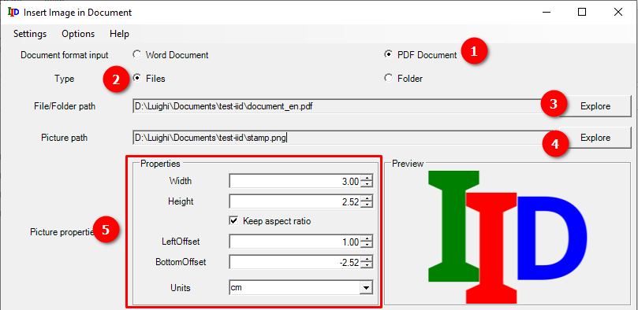
Select the option Relative to page in Reference type row.
Enter the page number and select which corner of the page will be the page reference for the image insertion. For more detailed information about the position calculation of the image relative to the page, please refer to Image position relative to page.
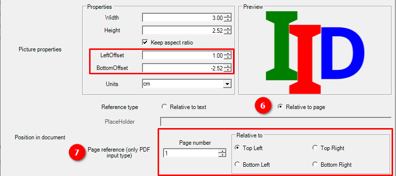
You can modify the subfolder name where the documents will be exported, if desired.
Click on Generate to create a new PDF document with the image inserted.
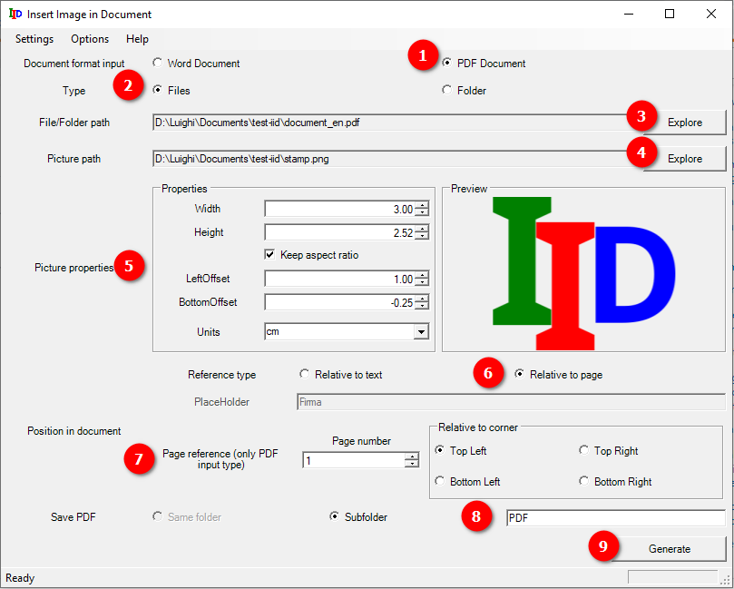
When the process starts it opens a new dialog which shows in a progress bar the advance of the processing and prints informative messages about the current state of the processing flow.
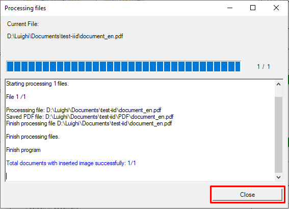
Then, you can check the result opening the PDF. Don't forget to close the PDF, if you want to regenerate it, otherwise an error will occur as the software cannot write the file if it is open.
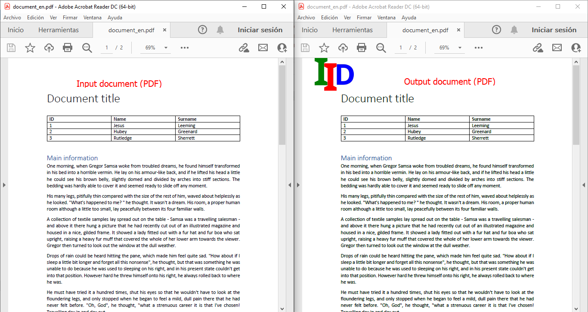
For a folder containing PDF files:
Select PDF Document as document input type.
Select Folder as Type.
Click on Explore in Files/folder Path row to select the folder containing the PDF files.
It opens the folder explorer where you should localize the folder that contains the PDF files.
From here, it continues with the 4 to the 8 steps of individual files. Make sure that the reference is set to Relative to page as specified in step 6. When clicking in the Generate button it opens the progress dialog box which shows the status of processing for all of the PDF documents inside the selected folder.
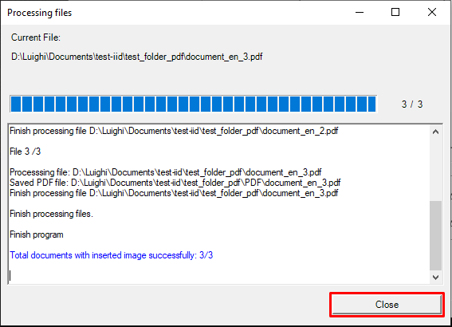
When opening the folder you can check the generated files (each one per input PDF document found in selected folder).